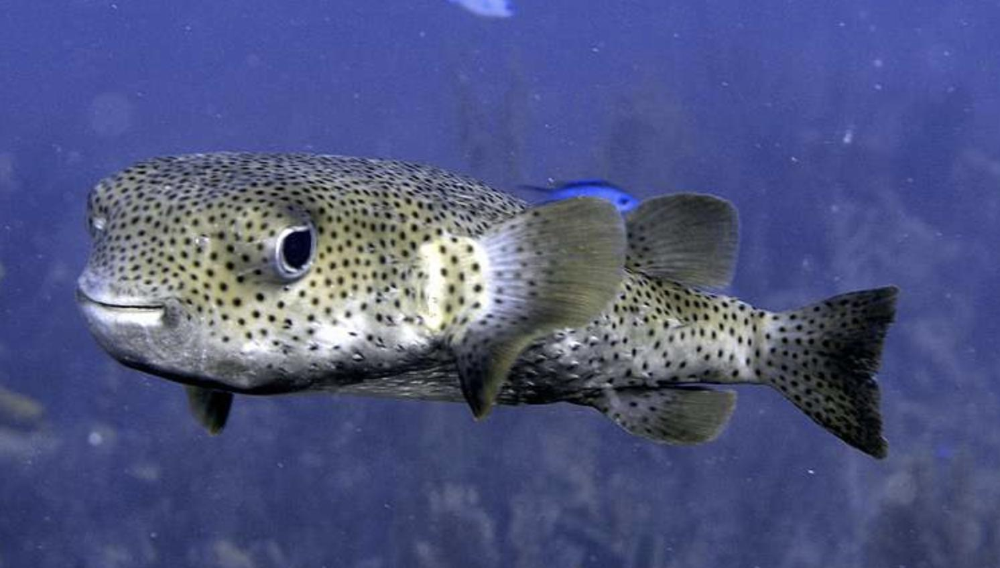
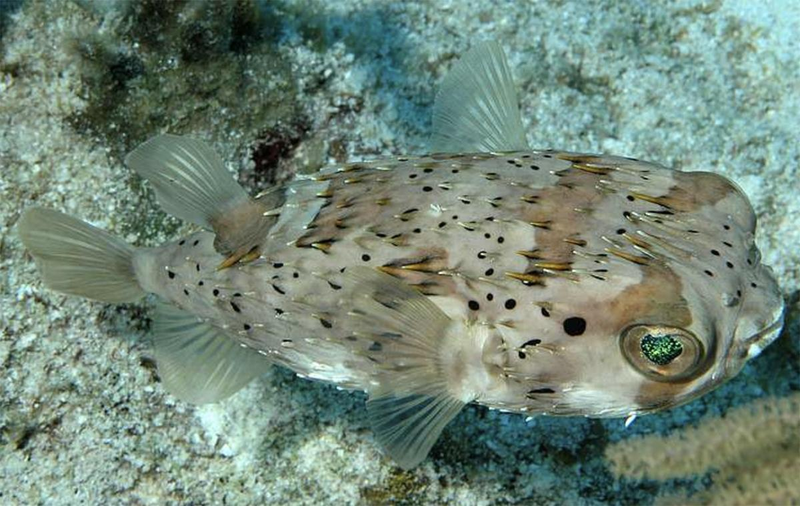
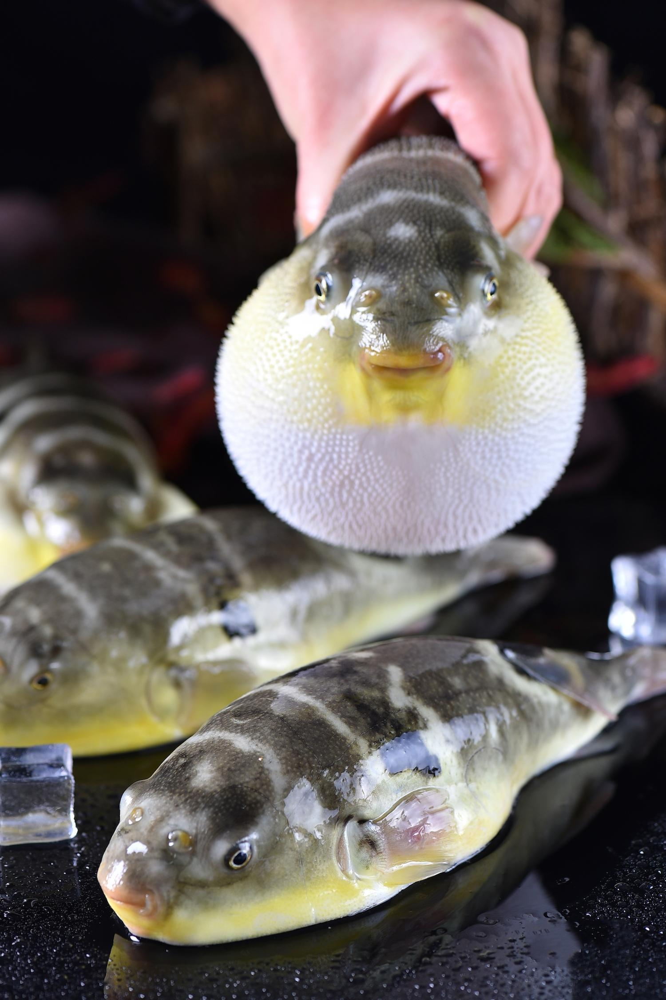
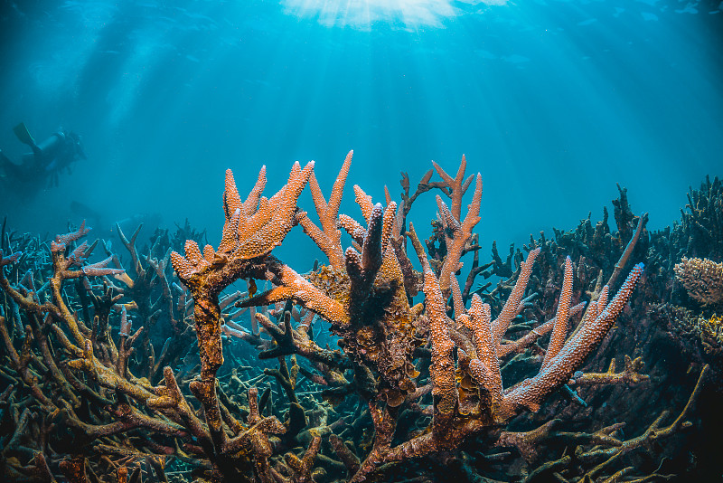

从科普阅读到科研数据，从宏观形态到微观基因——选择你的入口，以你的方式探索刺豚世界。

每一个物种都以可旋转、可缩放的3D模型呈现。鼠标悬停自动旋转，拖拽细察每一根棘刺的细节。
进入展厅
7种代表性刺豚与河豚的完整图鉴：分类地位、形态特征、地理分布、生活习性、毒性与保护状态。
浏览图鉴
刺鲀科物种的分子生物学数据中心：基因组、转录组、线粒体 CO1 条形码等科研数据入口。
进入数据库
了解本馆的创办使命、实体标本来源与数字化流程，以及数据来源与学术参考资料。
了解更多本馆以密斑刺鲀（Diodon hystrix）为旗舰物种。它是刺鲀科中分布最广、体型最大的代表之一，也是海洋珊瑚礁生态中最具辨识度的鱼类之一。
属名 Diodon 源自希腊语 "di"（二）+ "odous"（齿），指其上下颌各具一块愈合的喙状齿板；种名 hystrix 意为"豪猪"，形象地描述了它全身布满长棘的特征。
查看完整物种档案从分类学到毒理学，快速建立你对刺豚与河豚的认知框架。
本馆为私人收藏的刺豚实体标本预留了专属展位。当前展区以程序化3D模型呈现，后续将替换为高精度扫描模型， 让每一根棘刺、每一处斑纹都忠实于实物。
查看实体标本展位